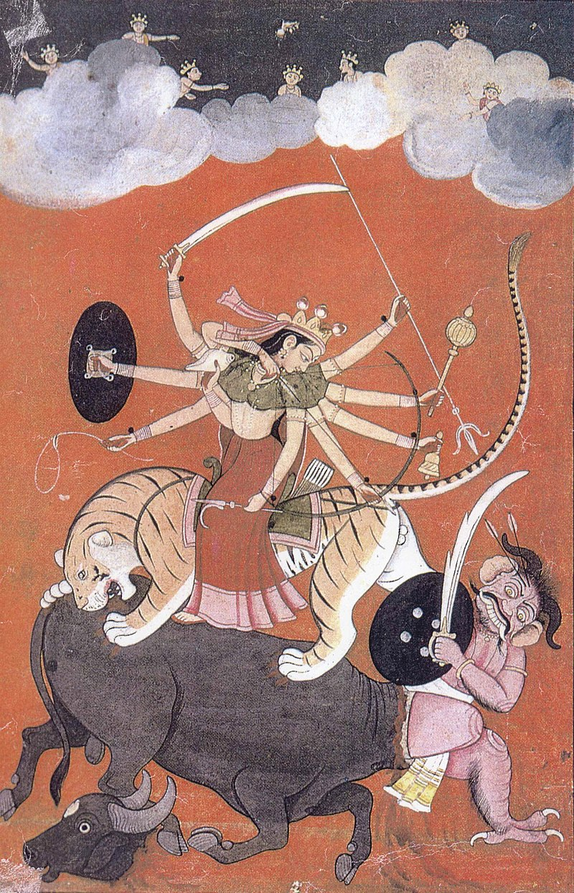

অপেক্ষার

শতবর্ষ উৎযাপনে পরিকল্পনা সমূহ
| পরিকল্পনা | পরিকল্পনাকারী |
|---|---|
| সিনিয়র যারা আছেন তাদের কাছ থেকে মিনার্ভা অতীত ইতিহাস সংগ্রহ ইত্যাদি। | বিপ্লব চক্রবর্তী |
| নবমী পূজায় রাতে মহালয়া মঞ্চস্থ করা, চন্ডি পাঠ | সিংকু কর্মকার |
| নবমী রাতে আরতি প্রতিযোগিতা | উদয়ন চক্রবর্তী, প্রশান্ত চক্রবর্তী, অয়ন চক্রবর্তী |
| বাচ্চাদের চিত্রাংকন প্রতিযোগিতা, সেই ছবি গুলা মন্দিরের পাশের ঘরের দেয়ালে শো করা যায় | অভী চক্রবর্তী |
| শতবর্ষে মিনার্ভার সাথে যুক্ত সিনিয়র জীবিত ও মরণোত্তর ক্রেস্ট দেওয়া যেতে পারে। | সিংকু কর্মকার |
| আমাদের শ্রদ্ধেয় গুরুজন যারা আছেন, তাদের স্মৃতিচারণ নিয়ে বক্তব্য অনুষ্ঠান এবং ম্যাগাজিন ও তৈরি করা যায়। | অয়ন চক্রবর্তী |
| সর্ব সম্মতিক্রমে প্রথম কাজ শতবর্ষ উদযাপন কমিটি ঘোষণা করা। শতবর্ষ উদযাপনের প্রথমশর্ত যা সবার কাজের গতি অনেক গুন বৃদ্ধি পাবে। | সিংকু কর্মকার |
| জাতীয় মানের ধর্মীয় ভজন গানের ১/২ জন শিল্পী আনা যায় যারা পাবলিক ফিগার সেখানে মিউজিসিয়ান সাপোর্ট টোটালটা আমার গ্রুপ থাকবে, সেটাও কনসিডারেই। | শুভ্র রক্ষিত |
| আমাদের পূজা কমিটির সাবেক বা বর্তমান শিল্পী যারা আছে বা তাদের পরিবারের কেউ তাদেরকে নিয়ে সাংস্কৃতিক পরিবেশনার প্রাধান্য থাকবে বা থাকা উচিৎ। তবে সব পরিবেশনাই যেনো ধর্মীয় আঙ্গিকের বাহিরে না হয় সেটা আমার অনুরোধ। আর উৎসব প্রাঙ্গণের সাজসজ্জাও হতে হবে পূজামণ্ডপ কেন্দ্রিক। আর সাজসজ্জা তে আল্পনা ও মুরাল চিত্রে আমার সহযোগিতা ও কাজ থাকবে ১০০%. | শুভ্র রক্ষিত |
| লোকেশন টা গুরুত্বপূর্ণ। পুজার নিয়ম কাজ গুলো বর্তমান মন্দিরে করে, আলাদা কোন স্থান যেমন মুখার্জি ঘাটলা বা সংলগ্ন এলাকায় বাদ বাকি আনুষ্ঠানিকতা গুলো করা গেলে ভাল হয়। | অয়ন চক্রবর্তী |
| মিনার্ভার ইতিহাস নিয়ে একটা ডকুমেন্টরি যেখানে আমাদের সম্মানীত প্রবীণ সদস্যদের স্মৃতিচারণ থাকবে। | অভী চক্রবর্তী |
| পূজা মাহাত্ম্যর জ্ঞান প্রদান করা। আমরা পূজা অর্চনা করি মাকে ভক্তি করার জন্য। কিন্তু আমরা কেউই জানি না কোন পুজা কেন করি বা তার কারণ কি। উদাহরণ - মায়ের প্রাণ প্রতিষ্ঠা কেন করা হয়? নতুন প্রজন্মের জন্য এটা জানা আবশ্যক পুজার নিয়ম এবং পুজোর মাহাত্ম্য। পুজা চলাকালীন দিনে আমার বিশেষ অনুরোধ পুজা মাহাত্ম্য, রামায়ণ, মহাভারতের কাহিনী, গীতার সারকথা অথবা মহালয়ার কাহিনী পাঠ করা হোক। | পৃথাকন্যা পোদ্দার |
| মায়ের বস্র-অলংকারের প্রতি বিশেষ দৃষ্টি আকর্ষণ যেন করা হয়। গত বছর মায়ের শূন্য গলা ছিল শেষ মুহুর্তে অনেক খুঁজে জোগাড় করা হয়। এতো আলোকসজ্জা করে কি লাভ যদি মাকে মন মতো না সাজাই। | পৃথাকন্যা পোদ্দার |
| পুজোর দুইদিন ধুনুচি নাচের আমন্ত্রণ জানানো হোক সবাইকে। ঢাকের প্রতি বেশি নজর দেয়া হোক। | পৃথাকন্যা পোদ্দার |
| ৩ দিন গত বছরের মতো এবারও ভোগের আয়োজন করা হোক। | পৃথাকন্যা পোদ্দার |
| এবার নতুন হিসেবে দুই তিনটে food stall পাশে বাসানো যায় মিনার্ভা ব্যনারে। ( ফুচকা, চা,মুড়ি) *self payment not for free. | পৃথাকন্যা পোদ্দার |
| পুজার জন্য স্থায়ী কোন ফান্ডের ব্যবস্থা করা,যেটা হয়তো মন্দিরের উন্নয়ন, গরীব সনাতনীদের বাচ্চাদের পড়াশোনা, চিকিৎসায় ব্যয় করা যেতে পারে। এছাড়া আমাদের কোন স্থায়ী মন্দির নেই,যদি অদূরে আমাদের স্থায়ী মন্দির করার চিন্তাভাব না থাকে তবে এই ব্যাপারে সকলে ভেবে দেখতে পারেন। | তন্ময় ভৌমিক |
| আমাদের পূজার সাথে জড়িত সকলকে ইনভাইটেশন দেওয়া,যারা হয়তো এখনো আছে।প্রতিটি মিটিং সমন্ধে আগেই মেসেজ দিয়ে নোটিফাই করা। | তন্ময় ভৌমিক |
| পুজায় চণ্ডীপাঠ, ঢাক, চিত্রাংকন,সংগীত, নাচ, উলুধ্বনি, শঁাখ প্রতিযোগিতার আয়োজন করা। মূলকথা, যা কিছু সনাতনী ও বাংালী আনার সাথে যায়, যথা সম্ভব নিশ্চিত করা। | তন্ময় ভৌমিক |
| মায়ের পুজায় সাত্ত্বিকতা নিশ্চিত করা।পুজার ভোগ প্রসাদের ব্যবস্থা রাখা।সম্ভব হলে ভোগপ্রসাদ বাসায় বাসায় পৌঁছে দেবার ব্যবস্থা করা। | তন্ময় ভৌমিক |
| অনেকেই বড় গুরুজন আছে,তাদের ধন্যবাদ দিয়ে সাময়িকী, ক্রোড়পত্র প্রকাশ করা। আমাদের পরের প্রজন্ম থেকে, বিশেষ করে ছোট দের অংশগ্রহণ নিয়ে চিন্তা ভাবনা করা। | তন্ময় ভৌমিক |
| মায়ের মন্দিরে কেন্দ্রিক শুধু পুজার সময়টুকু নয়, বছরের অন্যান্য পুজাগুলোও সল্পপরিসরে পালন করা যায় কিনা ভেবে দেখা যেতে পারে।যেমন - শনিপুজা, গীতাপাঠ,ভগবতপাঠ বা অন্যান্য। | তন্ময় ভৌমিক |
| আপনার মূল্যবান পরিকল্পনা গ্রুপে শেয়ার করুন | আপনি |